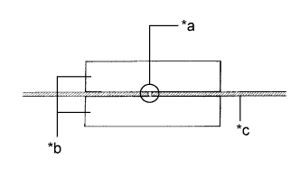
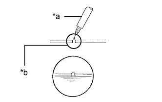

WINDOW DEFOGGER WIRE > REPAIR |
| 1. REPAIR DEFOGGER WIRE |
|  |
Clean the broken wire tips with grease, wax and silicone remover.
Place masking tape along both sides of the wire.
Thoroughly mix the repair agent.
| *a | Repair Point |
| *b | Masking Tape |
| *c | Broken Wire |
|  |
Using a fine tip brush, apply a small amount of the agent to the wire.
| *a | Fine Tip Brush |
| *b | Repair Point |
After a few minutes, remove the masking tape.